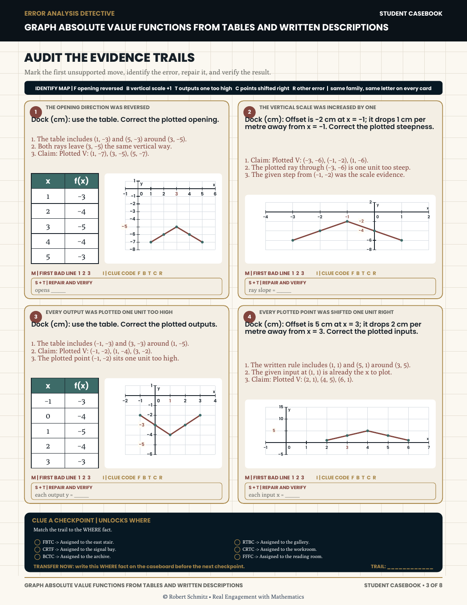
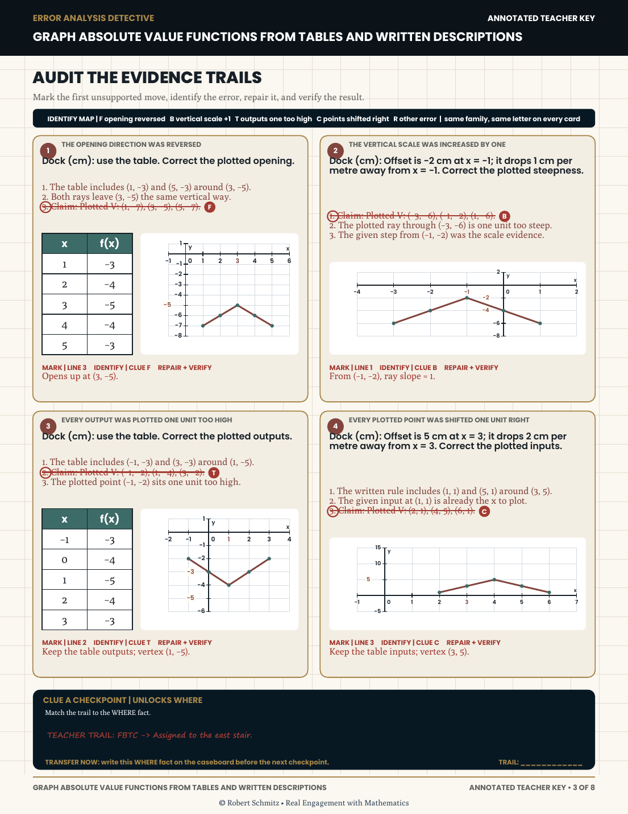
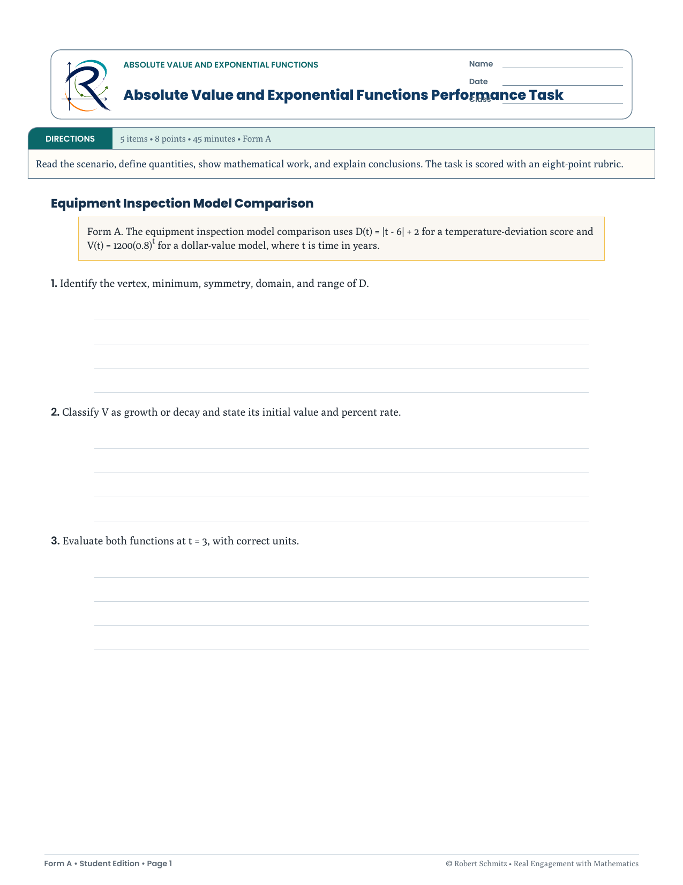

Assessment & alignment
Assessment Design & Standards Alignment
Item design, blueprints, and alignment practices drawn from classroom assessment, contribution to district progress-monitoring assessments, and REM practice engines—focused on evidence of learning.
Overview
Assessment design in this portfolio is treated as instructional design: clarify what performance looks like, sample it fairly, align items to standards and instruction, and use results to decide next teaching moves. Evidence includes standards-aligned items authored into reusable Canvas item banks, contributed items and blueprints for district progress-monitoring assessments, classroom and course-level item work, and the way REM practice systems embed formative checks—self-checking formats, error analysis, and sequenced difficulty—inside instructional assets.
Challenge
When assessment is an afterthought, items drift from instruction, difficulty clusters poorly, and teachers cannot tell whether an error is computational, conceptual, or a reading of the task. Intensive and remedial Algebra 1 settings amplify the cost: learners need precise diagnostic information, not only a percent correct.
The challenge was to design assessment artifacts and alignment habits that stay connected to the curriculum architecture—so practice engines and formal checks measure the same intended performances.
Audience
- Secondary math learners whose next instruction depends on accurate evidence
- Teachers and PLCs using common assessments and item banks
- District or program stakeholders coordinating aligned checkpoint assessments
My role
- Standards alignment and curriculum mapping for assessment targets
- Item writing and review for Algebra 1 performances
- Contributed items and blueprints to district progress-monitoring assessments
- Embedding formative assessment into REM practice systems and worksheets
- Designing teacher keys that support interpretation, not only scoring
Constraints
- Must align to adopted standards and local pacing realities
- Items and practice engines must be usable without specialized scoring software
- No fabricated psychometrics or score claims in portfolio presentation
- Balance rigor with accessibility for intensive / remedial learners
Design process
-
Define evidence
Translated objectives into observable performances (e.g., interpret slope in context; connect representations)—what would count as “got it” vs. a productive misconception.
-
Blueprint & align
Mapped standards and instructional emphasis to item types and practice-system coverage so checkpoints and daily engines sample the same construct.
-
Design items & engines
Wrote and refined items; structured REM worksheet engines (including error analysis and self-checking formats) as low-stakes evidence streams between formal assessments.
-
Support interpretation
Paired student pages with teacher keys and notes that highlight likely error patterns—turning scoring into instructional decision support.
Design decisions
- Alignment before novelty Every item or practice set starts from a clear standard/objective link—avoids clever tasks that measure something else.
- Formative engines inside the curriculum system REM formats (including Error Analysis Detective and self-checking practice) collect evidence during learning, not only at unit end.
- Misconception-aware keys Teacher materials surface patterns worth noticing—supporting responsive teaching after the assessment moment.
- Honest portfolio claims Process and artifact types are shown; no invented reliability coefficients, pass rates, or district score lifts.
Solution
An assessment approach that sits on three layers:
- Formal / common assessment contribution — items and blueprints for district progress-monitoring assessments, plus classroom assessments aligned to standards and instruction
- Item banks & blueprints — organized sampling of Algebra 1 performances across a unit or course
- REM instructional engines as formative systems — worksheets and practice sequences that double as evidence collectors with teacher keys for interpretation
Tools
Screenshots / artifacts
Selected assessment and error-analysis artifacts from REM Algebra 1 systems. No fabricated score metrics—these pages show item design, evidence trails, and teacher interpretation support.

{kind=link}

{kind=link}

{kind=link}

Learning principles applied
Constructive alignment
Objectives, instruction, and assessment sample the same performances.
Formative assessment
Practice engines provide ongoing evidence used to adjust teaching.
Cognitive demand awareness
Items and tasks intentionally vary procedural vs. conceptual demand.
Quality Matters lens
Clarity of objectives and alignment checks borrowed from online course quality practice.
Outcome
The work yields aligned assessment habits and artifact systems: blueprints, items, and REM engines that make learner evidence visible and usable. Portfolio presentation emphasizes design quality and alignment logic rather than unverifiable outcome statistics.
Reflection
District progress-monitoring contribution and daily REM engines taught the same lesson at different scales: alignment is a design activity, not a paperwork afterthought. For ID roles, that means I treat assessment as part of the learning system—planned with the curriculum architecture, not bolted on after slides are done.